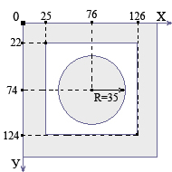

Глава 8
Мы с Вами уже говорили о том как сделать рисунок ссылкой.. в этой главе поговорим о том как сделать фрагмент, область рисунка ссылкой на тот или иной документ, а так же о том как сделать различные области одного и того же рисунка ссылками на различные документы.
Для осуществления данной задачи нам не обойтись без так называемых навигационных карт.
Предположим, у нас имеется такой рисунок:
..и нам необходимо сделать, так что бы пользователь, нажав на одну из этих "кнопок" переходил по ссылке в тот или документ.. что нам для этого нужно?
В первую очередь обозначим наш рисунок не как обыкновенное графическое изображение, а как навигационную карту присвоив этому рисунку своё индивидуальное имя. Делается это при помощи атрибута usemap тега <img> (я думаю Вам не стоит напоминать о том что тег <img> имеет обязательный атрибут src который указывает путь к той или иной картинке <img src="knopki.jpg"> )
Назовём наш рисунок/карту именем panel. Это будет выглядеть так:
<img src="knopki.jpg" usemap="#panel">Не забываем по правилам синтаксиса поставить знак #решётки перед именем..
Ну а теперь, собственно, составим навигационную карту. Она задаётся тегом <map> у которого есть атрибут name - имя.. улавливаете к чему я веду? Ну как Вы наверное уже догадались, укажем на базе какого рисунка мы будем строить нашу навигационную карту указав его имя..
<map name="panel">Теперь займемся тем, что укажем браузеру области рисунка которые будут являться ссылками, а заодно пропишем пути переходов по этим ссылкам. Эту задачу берет на себя тег <area>, закрывающего тега он не требует, и имеет следующие атрибуты, с которыми мы будем работать:
href - указывает путь к открываемому документу (точно так же как в теге <a>)Теперь наша карта приобретает такой вид:
<map name="panel">По сути теперь "зелёная" квадратная кнопка стала рабочей.
В чем Вы можете убедится нажав на неё в этом примере:
Немного поспешил с примером толком не объяснив суть написанного.. Заострим внимание на атрибутах тега <area>.
href="primer1.html" - здесь думаю понятно, это путь к документу, который должен открыться при нажатии на "зелёную кнопку".
Так как кнопка у нас квадратная, а квадрат как известно это "правильный" прямоугольник, форму области рисунка назначаем прямоугольной shape="rect".
А теперь самое интересное coords="15,15,82,82" - координаты.. Для прямоугольника они задаются двумя точками по принципу "Х1,У1,Х2,У2" Где Х1,У1- первая точка и соответственно Х2,У2 -вторая. Координаты указываются в пикселях.. Наш рисунок/карта имеет размеры 300 на 100 пикселей, её самый верхний левый пиксель имеет координаты Х=0,У=0, а самый нижний правый Х=300,У=100. Если не понятно, окунёмся в геометрию за пятый класс..
Взгляните на рисунок:
Так, выбрав прямоугольную форму shape="rect" для нашей области в виде квадратной кнопки мы указали координаты ёё верхнего левого и нижнего правого пикселей.. которых вполне достаточно для обозначения "рабочей" области всей кнопки.
Займёмся "жёлтой кнопкой", она у нас представлена в виде треугольника. Для того чтобы выделить её "рабочую" область из нашего рисунка, присвоим атрибуту shape значение poly - полигон, которое определит эту область как некий многоугольник, где координаты через запятую будут являться его вершинами, их может быть сколь угодно много "Х1,У1,Х2,У2,Х3,У3,Х4,У4… Х124,У124" фигура образованная этими точками вершинами углов может иметь вид любого многоугольника как правильного, так и неправильного. В нашем случае угла всего три, на то он и треугольник, следовательно его координаты будут заданы тремя парами значений "Х1,У1,Х2,У2,Х3,У3"
Значит всё вместе пишем так:
<area href="primer2.html" shape="poly" coords="148,15,185,82,110,82">А вот рисунок который наглядно показывает откуда берутся координаты точек..
Пример:
Ну и последняя "красная кнопка" она у нас круглая.. значит форма области будет круглой shape= "circle". На сей раз с координатами дело обстоит немного иначе. Нам понадобится три значения Х,У,R. Х и У это координаты центра нашей окружности, а R - это длина радиуса в пикселях.
Вот рисунок:
А вот пример:
Теперь немного о том, что ещё желательно было бы сделать с нашей картой прежде чем "монтировать" её в какую либо страницу.
Определим фиксированные размеры рисунка-карты атрибутами width и height
Напишем альтернативный текст, как для всего рисунка карты, так и для её отдельных областей используя атрибут alt, а также описание элементов атрибутом title.
Избавимся от рамки бордюра.. сделаем border="0"..(ну если Вам с бордюром больше нравится, можете этого не делать.. я не настаиваю..)
В конце должно выглядеть примерно вот так:
Иногда удобно формировать "рабочую" область изображения "смешивая" разные формы..
Предположим, наша очередная кнопка имеет такой вид:
Конечно, можно определить форму как многоугольник, но придется задать уйму координат для округлой части такой кнопки (ну это если нужна особая точность в навигационной карте).
А можно определить в этом примере две формы прямоугольник rect и окружность circle как показано на рисунке:
А в коде указать путь к одному и тому же документу:
Пример:
Однако стоит помнить о том, что если бы ссылки с разных форм вели к разным документам, то нажимая на область пересечения наших фигур посетитель будет переходить по той ссылке, чья область в коде указана первой.. в нашем случае это окружность.
Рассмотрим на примере.. предположим необходимо изготовить вот такую кнопку:
Как быть с отверстием в ней?
Тег <area> помимо атрибута href имеет противоположенный по значению атрибут nohref - неактивная область, то есть если пользователь нажмет на такую область, то ровным счетом ничего не произойдёт, чего нам собственно и необходимо добиться при изготовлении "отверстия" в нашей карте.
Карта будет задана двумя областями, неактивной окружностью circle и активной прямоугольной областью rect и как показано на рисунке чертеже иметь следующие координаты:
Как уже говорилось ранее, при пересечении областей наибольшим приоритетом будет пользоваться та область, которая в коде внутри тега <map> указана первой
Следовательно, пример будет иметь такой вид:
Отрывок из справочника: (http://www.webremeslo.ru/spravka/spravka.html) (атрибуты тега <img>):
usemap - изображение является навигационной картой на стороне клиента.Непонятно? Тогда читаем..
С атрибутом usemap мы вроде бы разобрались.. Смотрите, пользователь (клиент) открыв Вашу страницу, одновременно со всем остальным содержанием, загружает "на свою сторону" как сам рисунок, так и навигационную карту к нему и всё это дело обрабатывается его браузером.
А вот атрибут ismap тега <img> говорит браузеру о том, что к данному изображению на сервере, ну там где Вы выложили или собираетесь выложить свой сайт, есть навигационная карта. И теперь, когда посетитель (клиент) кликнет по какой либо области рисунка с таким атрибутом, браузер запомнит координаты этого клика и отправит их на сервер, где специальная программка обработает эти данные и перенаправит пользователя на тот адрес который указан в карте на сервере, в соответствии с полученными от браузера клиента координатами точки.
Пишется так:
<a href="http://www.site.ru/imagemaps/karta"><img srs="knopki.jpg" ismap></a>Где <a href="http://www.site.ru/imagemaps/karta"> адрес навигационной карты на каком либо сайте.. размещённом на том или ином сервере..
Всё равно непонятно? Если да, то тогда не стоит заморачивотся по этому поводу.. используйте usemap, на мой взгляд такое решение будет лучшим в большинстве случаев при использовании навигационных карт.
Что бы без труда определить координаты той или иной точки на Вашей навигационной карте откройте рисунок графическим редактором тем же Paint к примеру.. там, когда будете двигать указателем по рисунку, увидите две меняющиеся цифры, это и есть координаты пикселя Х и У на данном рисунке. В Paint эта панелька расположена в нижней части экрана.
При создании страницы с навигационной картой тег <img> всегда должен быть выше самой карты <map> То есть писать вот так:
<map name="panel">..можно, но не нужно.. потому что при загрузке страницы могут возникнуть проблемы, так как карта с разметкой уже загрузилась, а самого рисунка ещё нет..
И ещё что касается загрузки..
<img src="knopki.jpg" usemap="#panel">